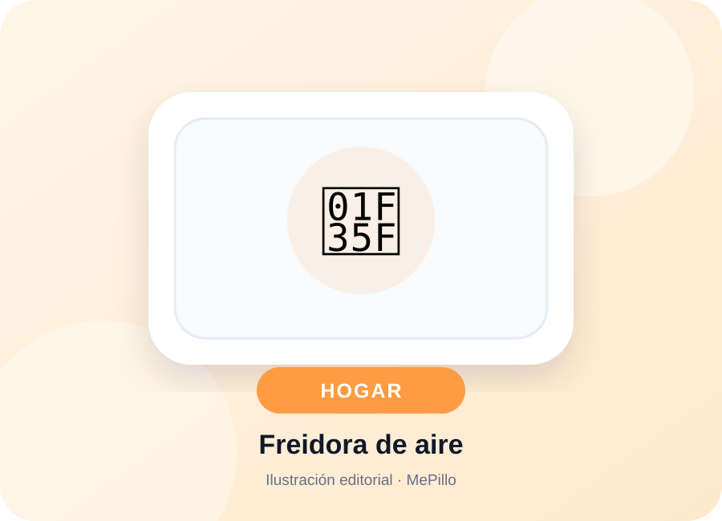
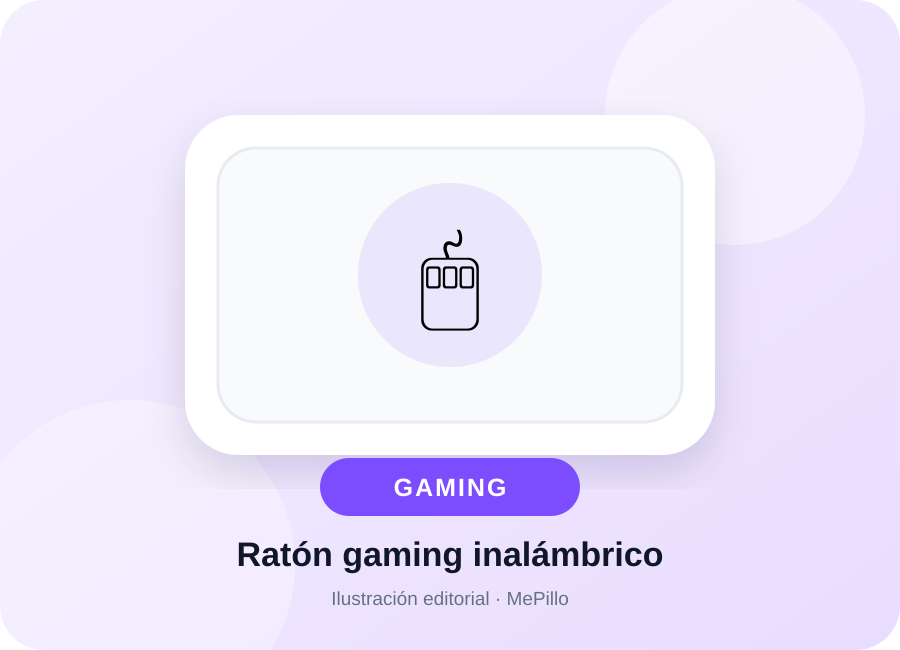

Utilidad real
Priorizamos productos fáciles de justificar en el día a día.
Recomendaciones fáciles de entender, organizadas por uso y categoría. Sin precios desactualizados ni fichas interminables: lo importante primero.
 Tecnología
Tecnología
Hogar
GamingCinco áreas, una misma idea: productos prácticos que tienen sentido.
Como afiliado de Amazon, MePillo puede obtener ingresos por compras que cumplan los requisitos. Los precios y la disponibilidad se comprueban siempre directamente en Amazon.es.
Priorizamos productos fáciles de justificar en el día a día.
Te decimos para quién tiene sentido y qué deberías comprobar.
Precio y disponibilidad se consultan en Amazon para evitar datos viejos.
Qué priorizar en teclado, ratón, almacenamiento, iluminación y orden.
Ver selección →Productos que simplifican tareas y no terminan olvidados en un armario.
Ver selección →Arranque, presión, carga y organización para el día a día y los viajes.
Ver selección →MePillo organiza recomendaciones de productos con una explicación breve, una puntuación editorial y los puntos que conviene revisar antes de comprar.
No vendemos directamente. Cuando haces clic en “Me lo pillo”, continúas la compra en Amazon.es.